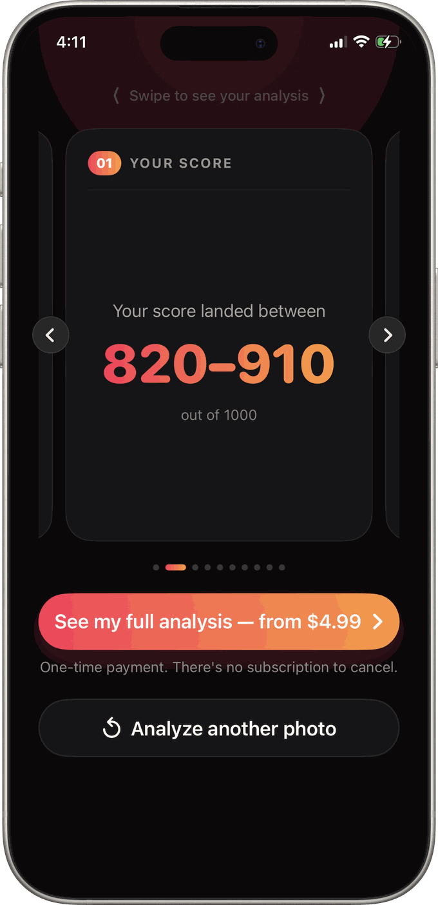
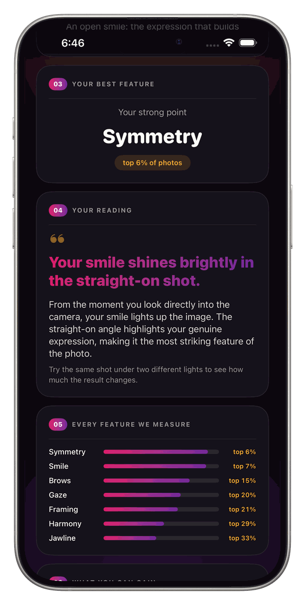
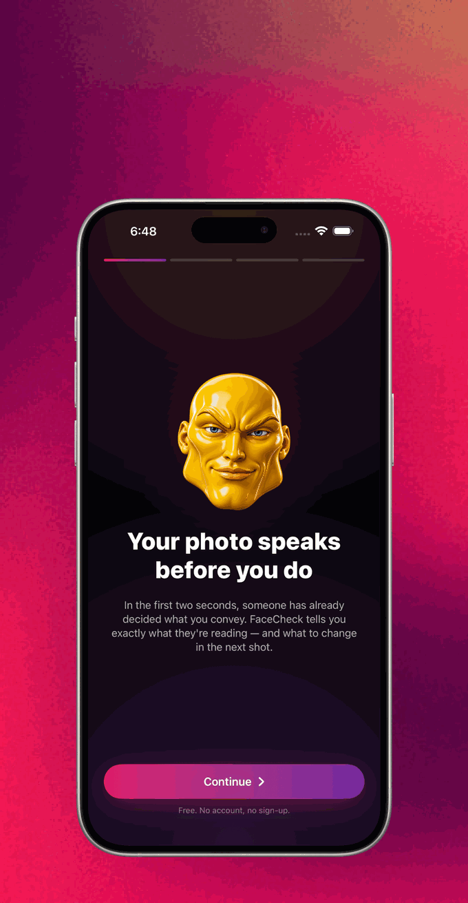
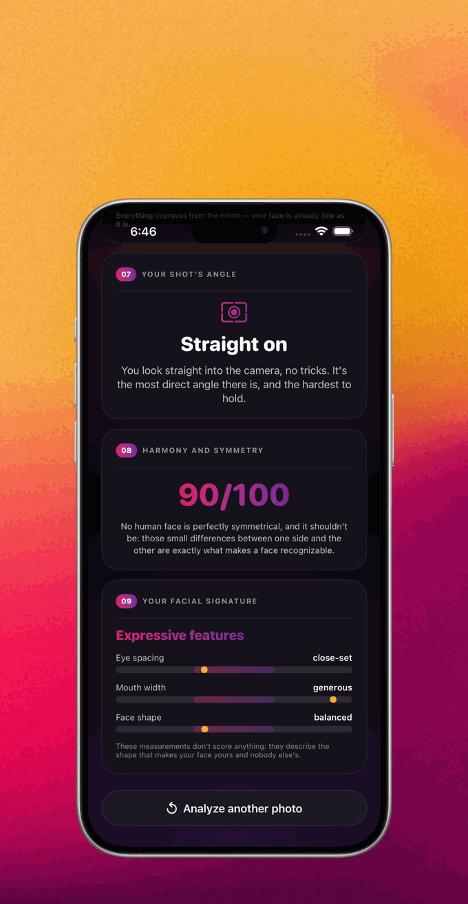
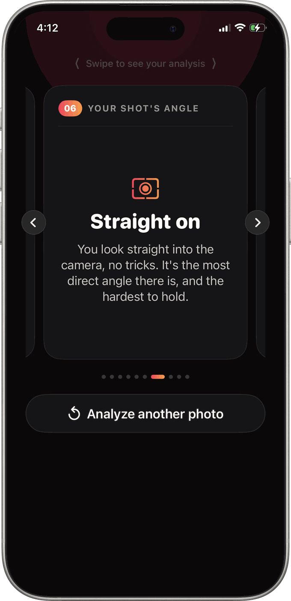
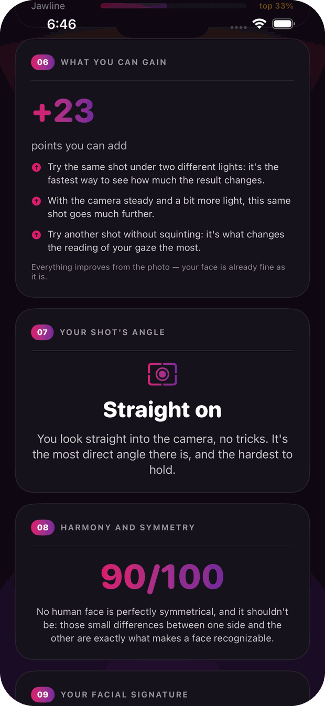
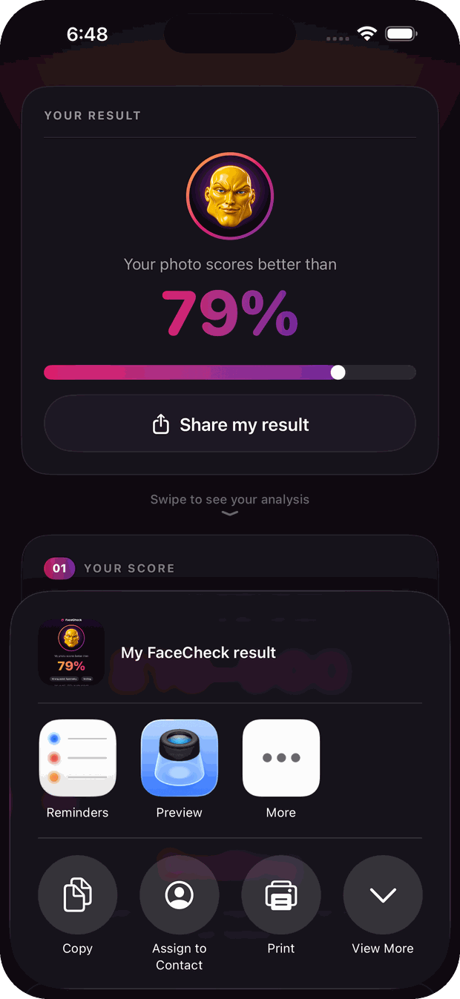
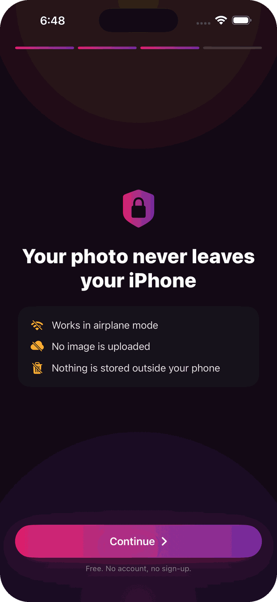

The face symmetry test that never sees the internet.
One photo. Your score out of 1000, your strongest feature, your golden-ratio proportions and what your face conveys in two seconds, analyzed entirely on your iPhone. Your photo never leaves your phone.
Know what your photo says.
In the first two seconds, someone has already decided what you convey. FaceCheck tells you exactly what they're reading, and what to change in the next shot.
iPhone · Free to try · Full analysis: one-time purchase from $2.99, no subscription
Inside the App
Nine cards. One honest reading.
Swipe through your full analysis: score, features, angle, proportions and the points you can gain. Built to lift, not to judge.

Your score
A score out of 1000. For the photo, not the person.
Symmetry, proportions, capture quality and aesthetics combine into one number, plus where your photo lands next to others. Every point you're missing is something a better shot can win back.

Every feature, measured
Brows, jawline, gaze, smile: ranked one by one.
Seventy-six facial landmarks turn into seven feature bars with a top-percent for each. You always see your strongest feature first, because there always is one.

First impression
What your face conveys in the first two seconds.
Calm, bright, intense, thoughtful: your expression is measured from real geometry (smile curve, eye openness, brow line) and always described in the positive.

Your facial signature
Golden-ratio proportions, described and never graded.
Eye spacing, mouth width, face shape: the measurements that make your face yours and nobody else's. These don't score anything. They tell you your shape, in words.

Your shot's angle
Your angle, read like a portrait photographer would.
Straight-on, three-quarter, chin up: every angle says something different, and FaceCheck tells you what yours is saying and why it works.

Points you can gain
Concrete tips. Real points. Next photo, better score.
More front light, a straighter angle, contrast with the background, a slight smile. FaceCheck counts the exact points on the table. Everything improves from the photo; your face is already fine as it is.

Share it
One tap to send your result to whoever picks the photo.
Your score and your reading go out as a clean card through Messages, Mail or anywhere else you share. The photo itself stays on your phone: only the result travels, and only if you decide to send it.

Private by design
Your photo never leaves your iPhone. Ever.
No upload, no servers, no account, nothing stored outside your phone. The whole analysis runs on Apple's on-device Vision, so it even works in airplane mode. Try that with a web face scanner.
Read the privacy policy →How it works
One photo to your full reading.
No account, no sign-up, no waiting. The analysis takes seconds because it never travels anywhere.
Take a selfie
Or pick any photo from your library. Front-facing works best.
76 landmarks, measured
Symmetry, proportions, angle and expression, read on your iPhone in seconds.
Swipe your nine cards
Score, best feature, first impression, angle, signature, points to gain.
Shoot again, score higher
Apply the tips, analyze the new shot, share your result if you like it.
FAQ
Questions, answered.
What is a face symmetry test?
How does FaceCheck score my photo?
Is my photo uploaded anywhere?
What is the golden ratio face?
What is a selfie rating?
Can I improve my score?
Does FaceCheck work offline?
How much does FaceCheck cost?
Is FaceCheck accurate?
What actually makes a photo attractive?
Your photo speaks before you do.
Find out what it's saying, without it ever leaving your phone.
Download on theApp StoreFree to try · One-time purchase · No subscription, no account, no upload